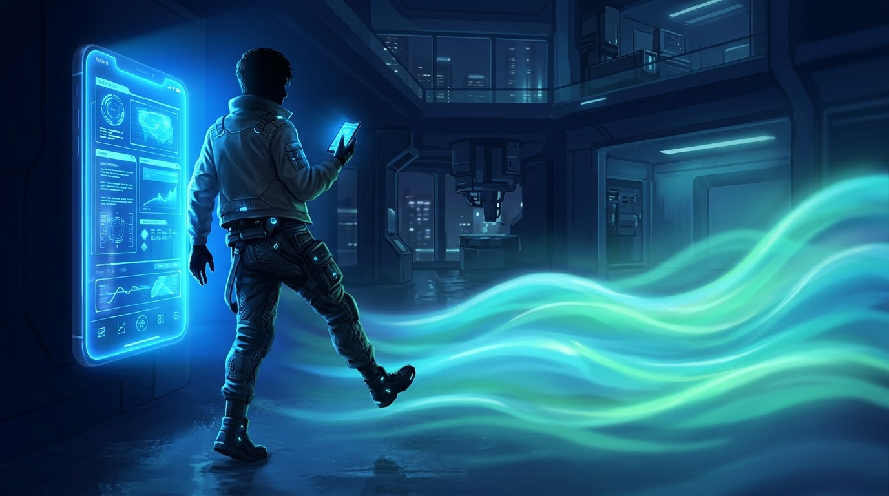

La economía de la atención
Las apps están pensadas para mantenerte deslizando con recompensas impredecibles, igual que un juego de azar.
Cada aviso o burbuja roja dispara un impulso rápido de curiosidad.
Explora cómo funcionan las notificaciones y el scroll infinito, revisa sus efectos en tu descanso y concentración, y haz un diagnóstico rápido de tus hábitos.
Un espacio para entender cómo compiten por tu atención y cómo recuperar tiempo real para estudiar, descansar y convivir.
Las apps están pensadas para mantenerte deslizando con recompensas impredecibles, igual que un juego de azar.
Se trata de usar el celular y las redes cuando tú decides, no cada vez que vibra o aparece algo nuevo.
Revisa los impactos, conoce qué pasa con el sueño y el enfoque, prueba los protocolos y mide tu puntaje.
Cómo cambia nuestra forma de concentrarnos, recordar cosas y relacionarnos cuando estamos conectados todo el tiempo.
Revisar el teléfono mientras hablas o comes corta el ritmo de la conversación y hace que se pierdan gestos y detalles reales.
Si buscamos todo al instante y saltamos de un tema a otro, cuesta más recordar bien lo que estudiamos o leemos.
Pasar de una tarea a un chat o video obliga al cerebro a reenfocarse cada vez, haciendo que avances más lento.
Señales comunes de cuando el uso excesivo de pantallas empieza a pasar factura al cuerpo y al ánimo.
Los videos rápidos acostumbran a la mente a cambios constantes y hacen que tareas largas se sientan pesadas.
Mirar pantallas brillantes antes de dormir retrasa la sensación de sueño y hace que despiertes más cansado.
Estar encorvado mirando hacia abajo por mucho tiempo genera rigidez en el cuello, hombros y fatiga visual.
Sentir ansiedad o ganas de revisar el teléfono sin motivo claro es una señal de que el hábito ya se volvió automático.
Ajustes sencillos en tu teléfono y en tu rutina para que desconectarte no dependa solo de la fuerza de voluntad.

Paso 1Deja encendidas solo llamadas o avisos importantes y silencia redes, juegos o grupos que te distraen todo el día.
Quitar los colores vivos de la pantalla hace que el teléfono se vea menos llamativo y reduce las ganas de abrir apps.
Dejarlo cargando fuera de tu alcance evita que te quedes scrolleando de madrugada o lo primero al despertar.
Saca de la pantalla principal las apps que más tiempo te quitan o úsalas solo en horarios definidos.
Dos charlas y explicaciones en YouTube para ver más a fondo cómo funcionan las pantallas y la atención.
Revisa cómo el diseño de las plataformas influye en la motivación, el enfoque y los hábitos diarios.
Mira cómo el consumo constante de contenido breve afecta el tiempo libre, el descanso y la calma.
Lo que cambia cuando se ponen límites claros al uso del teléfono.
"Dejé de cargar el celular junto a la cama y empecé a dormir mejor. Al principio se extraña revisarlo, pero luego descansas de verdad."
"Quitar notificaciones y bajar el tiempo en redes me ayudó a concentrarme mucho más cuando tenía que leer y estudiar."
"No se trata de borrar todo, sino de poner orden. Recuperé tiempo para proyectos y charlas sin estar mirando la pantalla."
Responde estas 4 preguntas con sinceridad para ver qué tan automático es tu uso del teléfono.